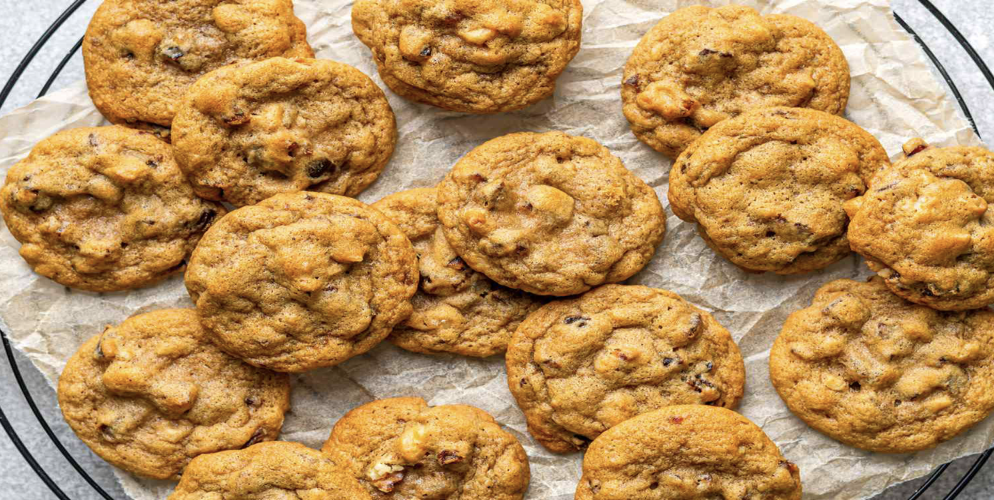

Cookies

Description
Crispy golden brown on the outside, tender and chewy inside….with a pronounced brown sugar flavor and subtle butter and vanilla notes in the background. Cookies are a fundamental dessert, and with this recipe, you'll be able to make your very own gooey chocolate chip cookies yourself!
Ingredients
- 2 1/4 cups all-purpose flour
- 1 teaspoon baking soda
- 1 teaspoon salt
- 1 cup (2 sticks) butter, softened
- 3/4 cup granulated sugar
- 3/4 cup packed brown sugar
- 1 teaspoon vanilla extract
- 2 large eggs
- 2 cups chocolate chips
Steps
- Pre-heat oven to 375 degrees farenheit.
- Combine flour, baking soda and salt in small bowl.
- Beat butter, granulated sugar, brown sugar and vanilla extract in large mixer bowl until creamy. Add eggs, one at a time, beating well after each addition.
- Gradually beat in flour mixture to the wet mixture.
- Stir in Chocolate Chips.
- Create small spheres using a tablespoon onto ungreased baking sheets
- Bake for 9 to 11 minutes or until golden brown. Cool on baking sheets for 2 minutes; remove to wire racks to cool completely.
- Enjoy!